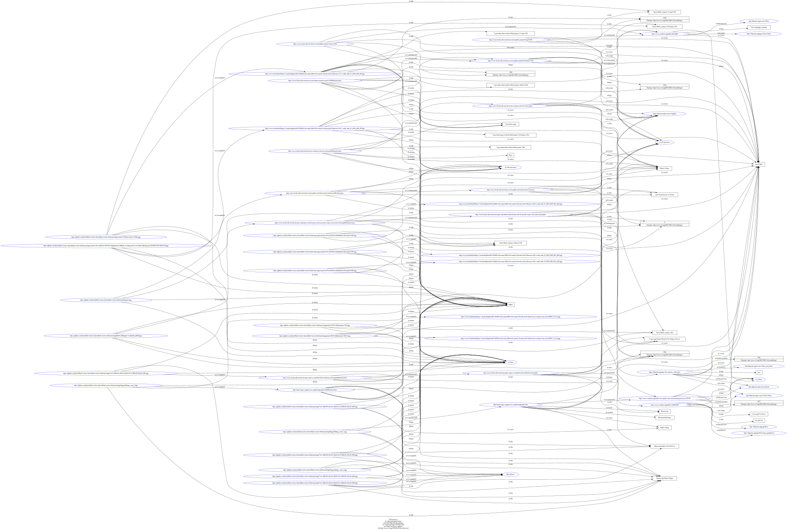

The project provides a digital archive of selected works by Sylvia Plath, a renowned American poet, novelist, and short story writer. Plath’s confessional style and exploration of personal turmoil, depression and death have made her a highly influential figure in modern literature. Despite her relatively short life and career, her work continues to be widely studied and revered.
The archive focuses especially on a decade of her production, from 1956 to 1963, and includes a range of texts that showcase various aspect of her writing. The collection features her prose, poetry, and private writing, highlighting the breadth and depth of her work. Plath’s private journals offer a particularly fascinating window into her personal life and creative process.
Specifically, the journals that have been selected are part of the unabridged journals of Sylvia Plath, which are the complete collection of her personal journals that were written between 1950 and 1962. These journals were edited and published in 2000 by Karen V. Kukil and provide a more intimate look at Plath's inner world and her personal experiences compared to the selected journals published in 1982. The unabridged journals include passages that were not published before, revealing more about Plath's life, relationships, and creative process.
In the 1956 journal, she reflects on her first encounter with fellow poet Ted Hughes at a literary party in Cambridge. In the 1958 journal, she delves into her writing process and the literary influence of DH Lawrence, Virginia Woolf, and her friend James Guy Bramwell. This period also covers her life with her husband, and Plath reflects on their relationship as well as her admiration for Hughes’ writing.
In the 1959 journal, she documents her financial struggles and her renewed enthusiasm for poetry despite experiencing depression. Plath’s journals provide valuable insight into her daily life, mental health struggles, relationships with family, friends, and lovers. Additionally, they offer deeper understanding of her literary influences and the themes and ideas that shaped her work.
In the 1962 journal, was written while she was living in North Tawton, Devon, with her husband and daughter Frieda. The entries chronicle Plath and Hughes's relationship with their neighbors, the Keys, and document different events leading up to Percy Key's death. Plath's detached tone when discussing the illness and death of her neighbor is surprising, and she likely used these entries as inspiration for her writing. The drafts show that Plath treated the entries as if they were a short story, typing and editing them accordingly.
By analyzing her journals, scholars and readers can gain a better appreciation of Plath’s multifaced personality and creative process. Sylvia Plath is also known for her confessional style of poetry, which delves into intense emotions and personal issues. Her use of striking imagery to convey ideas has had a lasting impact on contemporary poetry.
The archive showcases four of her selected poems: Sleep in the Mojave Desert, Stings, Mushrooms and Ariel.
Sleep in the Mojave Desert depicts a group of women sleeping in the desert, with each person in their own private space. The author uses vivid sensory details to create a haunting atmosphere and meditates on the fragility of human life and the inevitability of death.
Stings explores the speaker’s emotional response to the death of a swarm of bees. The poem employs violent imagery to convey the speaker’s complex feelings of anger, sorrow, and strange sense of triumph.
Ariel is about the poet riding her horse at daybreak, seemingly not in full control, being pulled by something through the air towards the moving sun. The title of the poem has multiple referents, including the name of Plath’s horse.
Lastly, the archive presents the second draft of The Bell Jar, Sylvia Plath’s novel. The draft reveals Plath’s editing process and the evolving relationship between the author and her central characters. The novel is an interesting work for several reason: first, it is semi-autobiographic novel that draws heavily from Plath’s own experiences with mental illness, particularly her own struggles with depression and suicidal thoughts. The novel offers a powerful and honest portrayal of the challenges faced by women in 1950s, including social pressures to conform to traditional gender roles and expectation.
These themes are particularly relevant to modern readers, as many individuals continue to struggle with questions of identity and purpose today.
This edition has been created following the close reading approach, which is a method of litery analys that involves a detailed and careful ezamination of the text in order to understand its meaning.
The texts have been read multiple times, annotated manually, focusing on different aspects at each time, such as the themes and the encoding of metadata on people and place and their connection through Linked Open Data.
However, close reading provides a subjective aspect of the analysis due to the necessities of the editors intepretation in the act of transcription. Regarding this, close reading is not be the only possible methodology, in fact the analysis of the text could be done also with a distant reading approach.
According Franco Moretti, distant reading involves using computational tools to analyze large collections of literary texts in order to uncover patterns and trends that might not be apparent through close reading, providing a more objective approach than close reading, to complete it.
In terms of distant reading, to enhance this edition a network analysis could be applied to visualize and analyze people iterations, as well as a sentiment analysis to bring out Sylvia Plath's feelings in her production.
Referring to Elena Pierazzo and Patrick Shale theorical definitions of DSE, the editions collected in this archive were built to accomplish specific features.
They provide a full representation of the subject matter: with the aim of offering an almost complete picture of the different types of Sylvia Plath’s writing production process, our editions provide the full transcription of the original sources that have been chosen together with the image reproduction. They have been realized adopting a critical approach: the texts have been an analyzed and edited, having as a starting point the original documents, of which we provide a representation the most faithful as possible. Originality and reliability of the sources have been pursued by gaining the texts from the British Library and Smith College collections. Furtheremore, responsibilities regarding the documents used for the transcriptions are stated clearly in the Disclaimer section.
With regard to the digital paradigm, we have been guided by Patrick Sahle statement:
"A digital edition cannot be given in print without significant loss of content and functionality.” (Patrick Shale)*
The editions we provide aims indeed to offer additional information which are impossible to include in a printed edition. For instance, the encoding for people and places using Linked Open Data provides additional context and by using RDF in turtle format for the knowledge graph, the digital archive ensures interoperability with other resources. Plus, to accomplish the point of preservation for future generations, the used digital formats such as XML and the inclusions of images of the original texts are suitable for long-term preservation.
The edition is easily accessible to the reader through a user-friendly interface that allows an easy navigation and retrieval of information and was used to visualize the text on the browser, further enhancing accessibility as well as the use of different tools, such as HTML, CSS and JavaScript.
The research question that this project aims to investigate deals with the contrast between Plath's private and public writings. Indeed, we have included the unabridged journals to provide a more intimate look at Plath's private thoughts and experiences, since the journals published in 1982 were edited by Ted Hughes. For what concerns the rest of the production meant to be published we refer to The Bell Jar and the poems.
We believe that by comparing Plath's private and public writings, we can gain new insights into her life and work. It is often said that Plath's writing was deeply autobiographical, and we hope that this project will shed light on how her personal experiences influenced her work.
The order of the items follows a timeline, which has been chosen in relation to the relationship between Sylvia Plath and Ted Hughes, in fact, it starts in 1956 on the day that they met and ends in 1962 the year in which they separated. This is a central theme in both her private journals and her public writings. The poetry items that have been chosen are meant to represent her public production which has been influenced by this relationship.
The items have been explored through Link Open Data also to see how the context around her was influential eventually in her writing.
In her unabridged journals, Plath frequently writes about her relationship with Hughes, including the highs and lows of their marriage. She also explores her own feelings of jealousy, insecurity, and longing. We can find a reflection of their relationship in her journals as well as in the semi-biographical novel The Bell Jar.
Our question also deals with analyzing, from a writing point of view, how the deletions in the texts differ from these published works and the unpublished journals.
We have noticed that her journals are practically without deletions, while her drafts are more heavily revised. This could suggest that Plath's journal writing was a more immediate and unfiltered reflection of her thoughts and emotions, while her creative writing required more editing and revision.
In order to realize the digital archive and to give credits to the large production of Sylvia Plath the British Library and the Smith College webstites have been browsed to select the images to transcript.
To realize the transcription in XML dital format (eXtensible Markup Language) we followed the TEI guidelines.
TEI stands for Text Encoding Initiative, which is a consortium of scholars and institutions involved in developing guidelines for encoding humanities texts in electronic form. A TEI model is a set of guidelines and conventions for encoding various aspects of a text, such as its structure, layout, and content, using XML.
The models provide a standardized way to represent the features of texts that are of interest to scholars in the humanities, such as historical and cultural contexts, language usage, manuscript variations, and editorial interventions. TEI models can be used to encode a wide range of textual materials, including literary works, historical documents, manuscripts, and multimedia resources.
These models are developed collaboratively by scholars and experts in various fields, and are constantly evolving to accommodate new types of data and to incorporate advances in digital humanities research. They are designed to be flexible and adaptable to a wide range of research needs and project requirements.
We have encoded the text respecting the subdiviison proposed by the hierarchy of the model using Oxygen editor.
Specifically, we've placed inside the TEI element the TeiHeader and the text element.
The TeiHeader is meant to host the metadata information, therefore we have inserted it through the fileDesc, profileDesc and xenoData
Inside fileDesc is placed the bibliographic description of the file, that contains title and statements of responsability, together with the details of the publication adn distribution of the file, as well as the information about the source of the texts.
profileDesc contains non bibliographic information regarding cited people and places in the document. In particular, we used particDesc in which we inserted the tags listPerson to encode the cited people. For what concerns the places, we used settingDesc which contains the listPlace to encode places
For each person and each place that we've mentioned we inserted through the attribute sameAs the DBpedia and VIAF reference for the specific names.
To enrich the project, Linked Open Data has been included in the encoding, through the previus mentioned tag xenoData
Linked Open Data (LOD) refers to a set of principles and best practices for publishing and interlinking structured data on the web. The goal of LOD is to create a decentralized and interoperable web of data that can be easily accessed, shared, and reused by humans and machines alike.
By linking data across different domains and disciplines, LOD has the potential to facilitate interdisciplinary research and discovery, and to support the development of intelligent applications that can reason over large and complex datasets. Some examples of LOD initiatives include DBpedia, which extracts structured data from Wikipedia, and the Linked Open Data Cloud, a collection of interlinked datasets from various domains and disciplines.
One of the most striking improvements that XML made to SGLM was the ability to express both a schema and the objects it describes using the same language. - Julia Flanders
The structure data componing LOD have been expressed in the RDF/XML format, through xenoData in which we placed the rdf:Rdf tag containing the single triples are placed in the rdf:Description tag.
Specifically, we referred to DublinCore and FRBR standards.The FRBR model aims to facilitate the rertivial of a specific bibliographic item (Julia Flanders).
FRBR stands for Functional Requirements for Bibliographic Records. It is a conceptual model developed by the International Federation of Library Associations and Institutions (IFLA) to provide a framework for the organization and retrieval of bibliographic information.
FRBR is based on the idea that bibliographic records should be organized according to their underlying intellectual structure rather than their physical format. The model defines four key entities of bibliographic description:
The standards we've refereed to have been declared through the following namespaces placed in the TEI element:
SCREENSHOOT NAMESPACES
SCREENSHOOT OF XENODATA
We dedicated an RDF description tag to each of the FRBR group 1 entities (Work, Expression, Manifestation, Item), we started by describing the work inserting the URI referring to the Worldcat metadata information regarding the each of the works.
For the expression, we represeted it referring to the URI of the British Library page or Smith College page, containing the metadata regarding the specific expression we encoded.
We considered as a manifestation of the expression the digital image provided by the British Library, since it is an embodiement of the particular expression we refer to.
In the end, the item has been described referring to our own URI pointing to the specific item, as specific explar of the manifestation.
Here follows a list of the most used XML tags, in order to reproduce in the most reliable way the original document:
The transcription has been inserted into the body element contained into thetext.
To render the specif features of the text in a faithfull way we have used mostly the following tags:
subst: we've used this tag to refer to groups of delition and additions, considered as single interventions of the author in the text. Therefore, we've inserted inside of this element del and add contiaing respectively the delitions and additions.gap: we've described through this tag some material that is omitted from the transcription, because it was deleted by the author or illegible, in fact to enrich the tag we've specified the attributes @reason="deleted" or @reason="illegible"unclear: this tag has been used for encoding words or groups of words which cannot be transcibed with certanty.Specifically for the poems, we've used others more appropriate tags, allowing to describing the structure of the poem.
lg: the tags contains groups of lines functioning as formal units.l: it contains a single line of verse of the poem.Besides all the challenges in hand listed so far while building a digital scholarly edition, another possible issue under constant change is the way facsimiles and digitized works are displayed on the web, giving the possibility to the user to explore the item as much as possible.
Indeed, dealing with images in the digital world can be complex depending on the task, and here we’re talking about high quality images, because many times a certain manuscript could be built into layers, and that should somehow should be visible even on the image/digitized version of that work.
And since 2012, the International Image Interoperability Framework (IIIF) has been enabling scholars to view, annotate and remix digitized images. The Bodleian has been in the vanguard of these developments, first with Digital.Bodleian, our IIIF-compatible digitized special collections website, and now with the Digital Manuscripts Toolkit, which will open up IIIF technology to humanities researchers with a set of easy-to-use tools.
Since few of Sylvia Plath’s manuscripts present many revisions made by hand, we also inserted the option of an extra viewer for the images, in which were realized with IIIF and Mirador, an Open-source, web based, multi-window image viewing platform with the ability to zoom, display, compare and annotate images from around the world.
The process followed was to first create a server to host those images with Cantaloupe, then a IIIF manifest was created and the json file for that can also be found in the repository. Using the information from the manifest was possible to create a viewer on Mirador and the viewer was embbeded on the website with the help of a specific mirador function in JavaScript that can also be found in the same repository.
With that, we attend the necessary aspects in order to have a more complete digital scholarly edition that allows the works of an author to be accessible, foundable, shareble and explored in many different ways.
"Styling scripts in a language like CSS (or indeed JavaScript) are also of capital importance in modern, best-practice HTML websites."" - Elena Pierazzo
To render our encoding in an html format we've used CETEIcean JavaScript library, in order to display the encoding in the web browser.
Furthermore, we enriched the representation of the encoding thanks to CSS mostly position the text in the page to be more faithfull to the real document as possible.